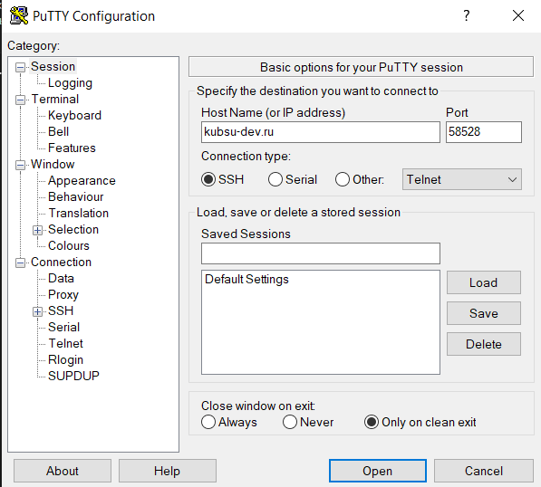
Настройка подключения к серверу kubsu-dev.ru через PuTTY: указан хост kubsu-dev.ru, порт 58528 (нестандартный, вместо 22), тип соединения SSH.
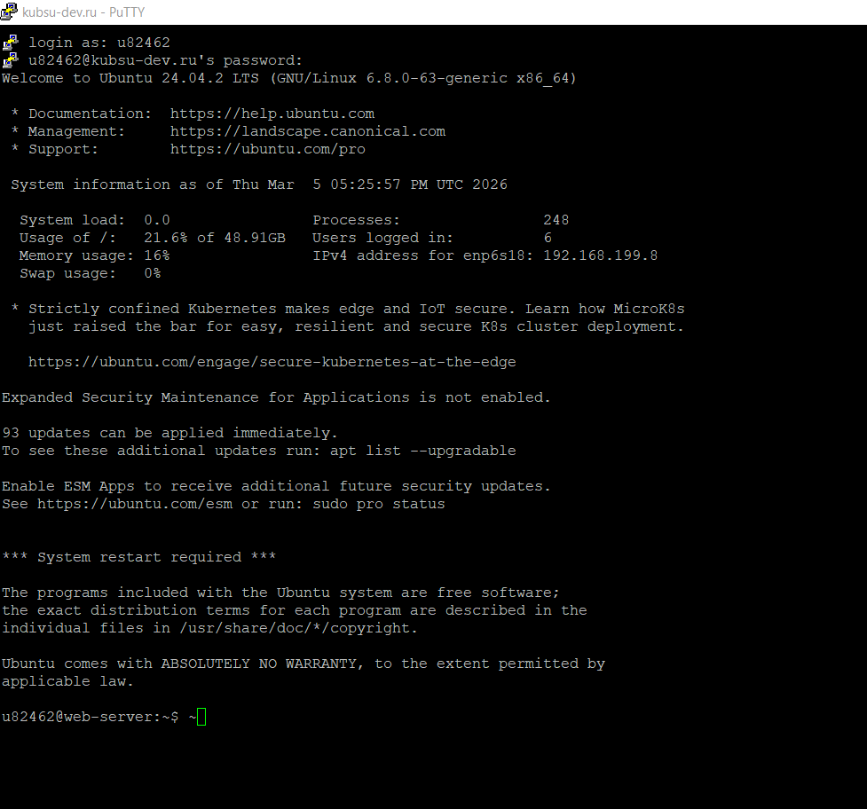
Успешное подключение к серверу под логином u82462. Отображается приглашение командной строки Ubuntu 24.04.2 LTS. Пользователь зашёл в систему, информация о загрузке, IP-адрес в локальной сети 192.168.199.8.
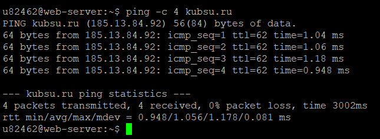
Команда ping -c 4 kubsu.ru показывает, что IP-адрес сервера — 185.13.84.92. Среднее время отклика 1.056 мс, потерь пакетов нет.
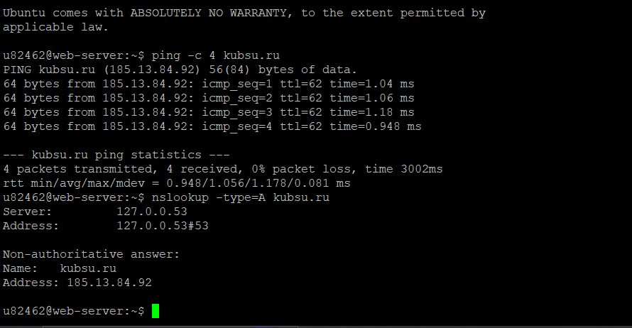
Команда nslookup -type=A kubsu.ru . A-запись домена kubsu.ru указывает на IP 185.13.84.92.
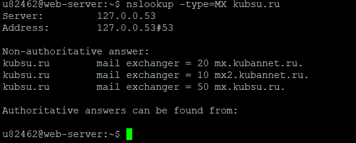
MX-записи домена kubsu.ru: приоритет 10 → mx2.kubannet.ru, приоритет 20 → mx.kubannet.ru, приоритет 50 → mx.kubsu.ru.
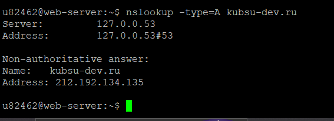
A-запись домена kubsu-dev.ru: IP-адрес 212.192.134.135.
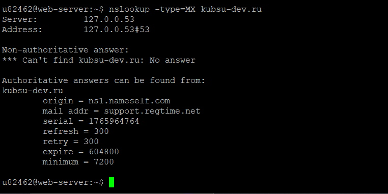
Запрос MX-записей для kubsu-dev.ru не дал ответа (MX-записи отсутствуют). В ответе показана информация об авторитативной зоне (origin ns1.nameself.com, mail addr support.regtime.net).
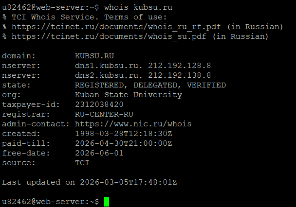
Данные whois для домена kubsu.ru: дата регистрации 1998-03-28, оплачен до 2026-04-30, регистратор RU-CENTER-RU.
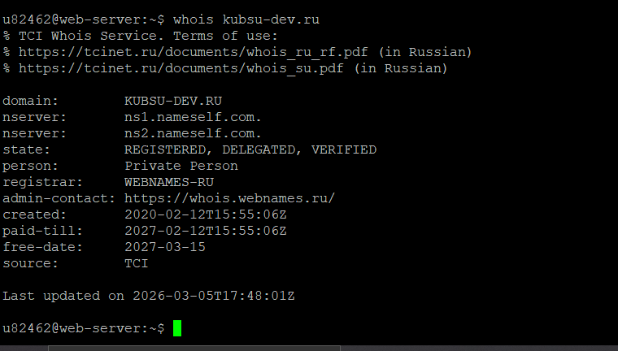
Домен kubsu-dev.ru зарегистрирован 2020-02-12, оплачен до 2027-02-12, регистратор WEBNAMES-RU.
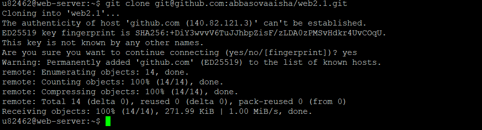
На сервере выполняется клонирование репозитория https://github.com/abbasovaaisha/web2.1.git. Репозиторий содержит файлы лабораторной работы.
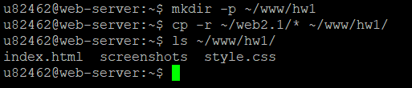
Создаётся целевой каталог ~/www/hw1, затем все файлы из клонированного репозитория копируются в него. Проверка командой ls показывает наличие index.html, screenshots и style.css.
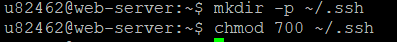
Создание каталога ~/.ssh и установка прав 700 для безопасного хранения ключей.
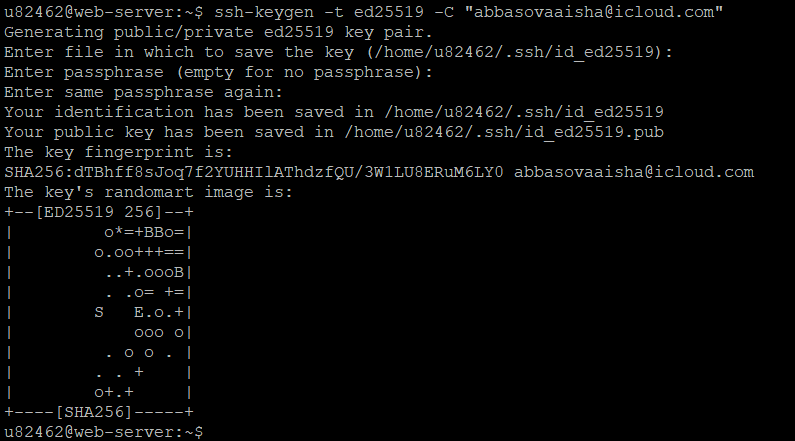
Генерация пары ключей ED25519 с комментарием abbasovaisha@icloud.com. Ключи сохранены в /home/u82462/.ssh/id_ed25519 (приватный) и .pub (публичный).
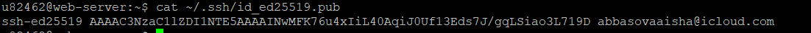
Просмотр содержимого публичного ключа. Этот ключ необходимо добавить в настройках GitHub (Settings → SSH and GPG keys).
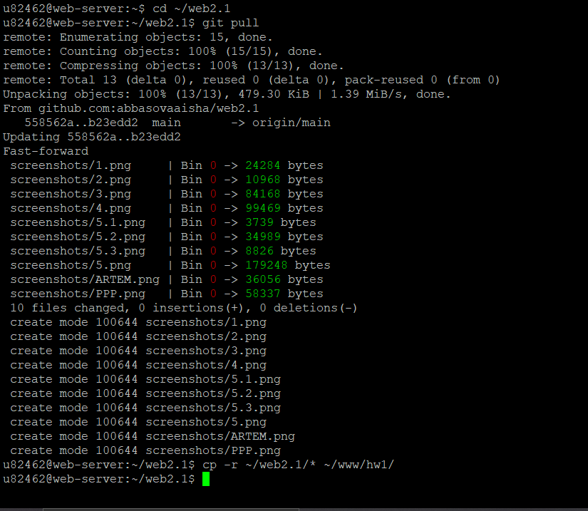
После добавления новых скриншотов в локальный репозиторий и пуша на GitHub, на сервере выполняется git pull для получения обновлений. Видно, что добавились файлы 1.png, 2.png, 3.png, 4.png, 5.1.png, 5.2.png, 5.3.png, 5.png, ARTEM.png, PPP.png. Затем изменения копируются в ~/www/hw1 командой cp.
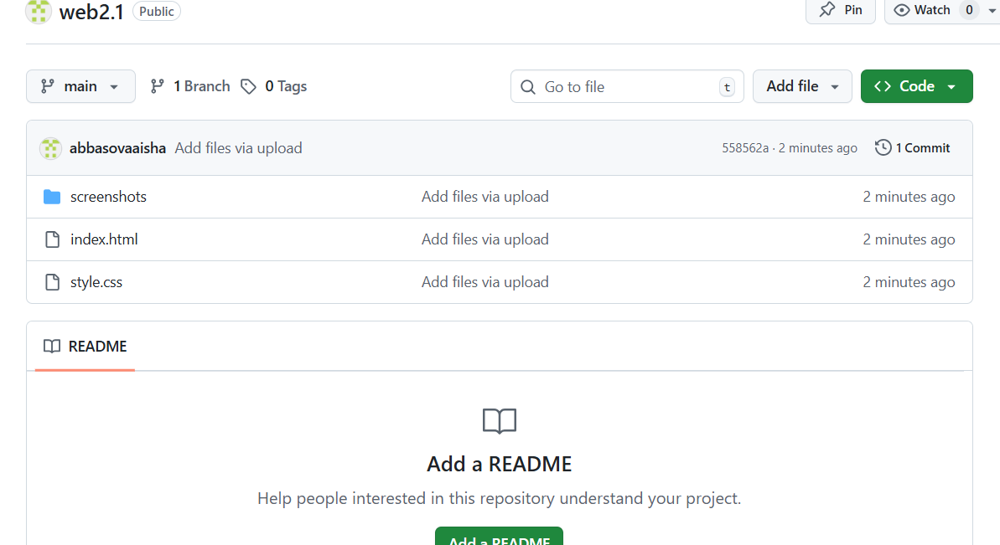
Скриншот веб-интерфейса репозитория web2.1. Видны папка screenshots, файлы index.html и style.css, а также последний коммит "Add files via upload".
Файлы успешно размещены в каталоге ~/www/hw1. Страница доступна по адресу: http://u82462.kubsu-dev.ru/hw1/ (замените hw1 на фактическое имя каталога, если отличается).
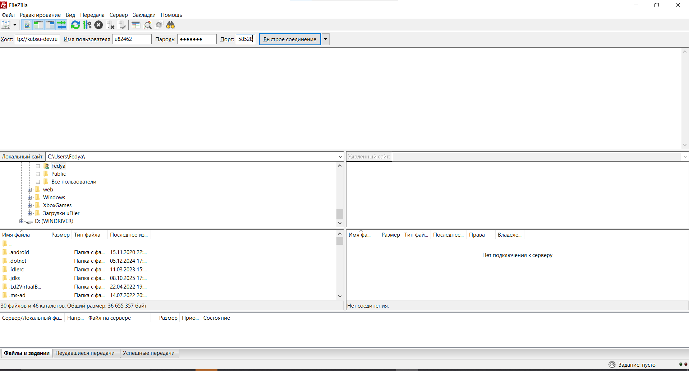
Настройка подключения в FileZilla: хост kubsu-dev.ru, порт 58528, протокол SFTP, пользователь u82462.
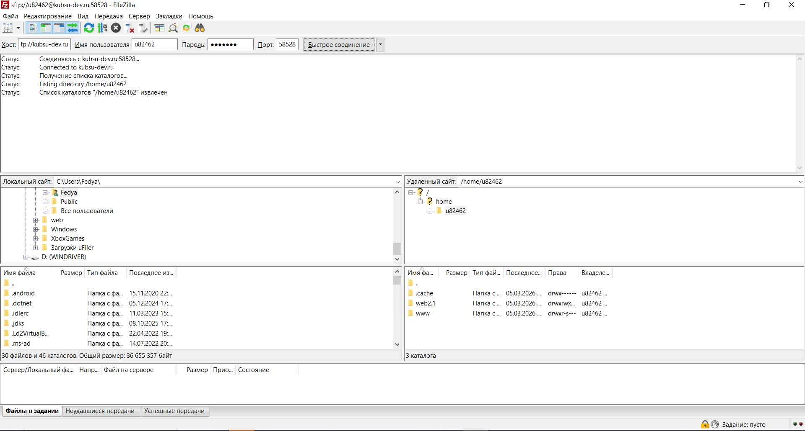
После подключения отображается список файлов на сервере (в правой панели) и на локальной машине (в левой панели). Статус показывает успешное соединение и получение списка каталогов. Файлы лабораторной работы (папка web2.1 и www) видны на сервере. Для завершения задания необходимо скачать папку hw1 или web2.1 на локальный компьютер. На скриншоте передача ещё не начата, но соединение установлено.
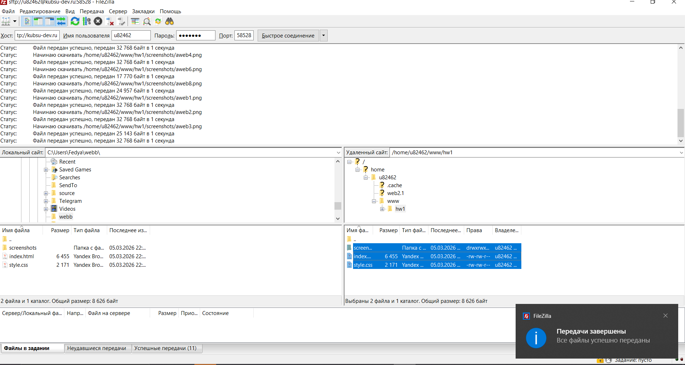
после скачивания файлов на локальный компьютер будет добавлен дополнительный скриншот с подтверждением успешной передачи.
После добавления новых скриншотов в локальный репозиторий и пуша на GitHub, на сервере выполняется git pull для получения обновлений. Видно, что добавились файлы 1.png, 2.png, 3.png, 4.png, 5.1.png, 5.2.png, 5.3.png, 5.png, ARTEM.png, PPP.png. Затем изменения копируются в ~/www/hw1 командой cp.